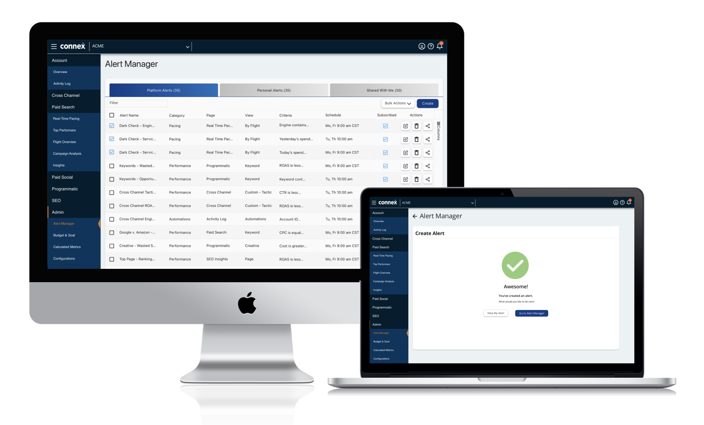

I was the main designer for this project Q1-Q3 2021 ideating and validating early design concepts. I Conducted multiple types of research including user interviews and usability testing. I regularly presented results to senior leadership and delivered final assets for production.
Summary
In marketing campaigns for our clients our marketers need to check on their campaigns to ensure that the campaign goals are being met and ensuring that the budget is not being overspent.
This can get very repetitive since our marketers would need to look into each campaign to track the metrics and this requires them to continuously keep checking the budget daily and as many as five times in one day depending on the lifespan of the campaign.
This Connex alerts feature allows our marketers to manage by exception and only have to look at their campaign when their alert criteria is triggered reducing the amount of time spent on pacing.
The Problem
We were able to uncover a pain point in our marketers experience of using Connex through a rolling research cadence I initialized.
Pacing multiple times a day requires significant time, effort, and mental calculation which poses a significant inefficiency since it takes up on average two and a half hours of our users time throughout the day.
Business Problem
Because our marketers use a large amount of their time to pace their campaigns this causes their other tasks and responsibilities to be delayed and require more effort.
User Goals
We want to give our users the best experience with our product and allow them to focus on their other tasks such as creating presentations to increase client confidence and identifying potential ways to increase spend and campaign efficiency
Business Goals
Because our marketers use a large amount of their time to pace their campaigns this causes their other tasks and responsibilities to be delayed and require more effort.
User Interviews
I learned as much as I could through our knowledge base articles and other product team members. I conducted user interviews and was able to put together lofi designs.
I interviewed 10 users to uncover pain points in the experience specifically relating to pacing and pacing related tasks. Pacing entailed budget management, client reporting, and weekly updates for client awareness.
Prototyping
I created a prototype that broke down the alert creation process into small digestible chunks so that users could confidently move forward through the process with ease.
Final Designs
My final design consisted of a step by step process that allowed user to focus on one part of the alert set up process at a time and a review page that allowed users to see the alert they created before saving it.
Results:
After the new feature was launched we saw an increase in Connex Platform adoption by 64% and a reduction of task completion time by 17%.
Overview:
This page is for users to see all of their information at a glance. This is useful for weekly updates and monthly reporting with clients.
Below are some prototypes from different projects I utilized to communicate my designs effectively.
Reflection:
I've been learning so much about marketing at Rise Interactive and I'm looking forward to growing and increasing visibility for the product team and showing the rest of the organization the value we bring.